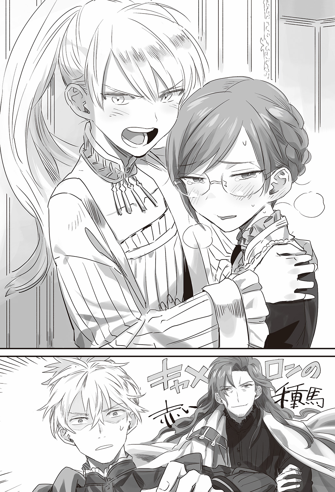
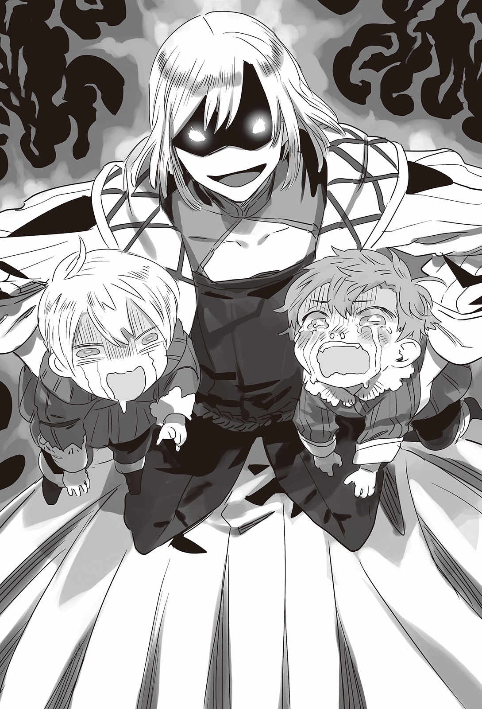

Chapter 2 – A Mediocre Man
.
Part 1
「──Can I ask why these people are collapsing?」
Agatha who was brought to Baldr’s office was astonished seeing so many men were lying prostrated on their desk completely unmoving.
「I’m sorry. They have fought bravely.」
「Who will keep the government running if they collapse? The people won’t just wait quietly you know? Do you understand that the reason Baldr is accepted because of your good ruling over this Trystovy?」
「I can’t argue at all against that.」
「Then wake them up and make them work.」
Baldr wordlessly slumped and hung his head down at Agatha’s merciless words.
Agatha arrived at Trystovy around one month after BAldr and Augusto’s visit to Valerie’s residence.
As the result of Welkin all-out refusal to the church’s crusade proclamation, harassments in tangible and intangible form became everyday occurrence in Mauricia Kingdom although things like assassination and battle hadn’t occurred openly.
It was still better if it was only something like an inn refusing to accept them as guests, but there were also harassments like tampering with horse fodder or serving smelly food that had gone past its expiry date.
Because of that the journey of Agatha and others had to pay attention to safety and their departure from the country got greatly delayed.
Agatha had finally overcome such trial and tribulation and reunited with her beloved Baldr, and yet what was waiting for her was a scene of carnage with corpses lying all over the place.
「Let’s have a TALK.」
「I-I also feel really bad for Agatha with this situation! But the documents that need to be approved are keep accumulating and nothing can be done!」
「Is that how you are talking to your fiancée who has journeyed through thousands of miles while thinking of you in her heart all this time just to meet you!?」
Although it wasn’t at the level of Silk or Seyruun and others, even Agatha was one of the maidens who were in live with Baldr.
She couldn’t be blamed at all even if she dreamed of a romantic and dramatic reunion with Baldr.
And yet the reality was…….
──*Geshi! Geshi!*
「Aah! It’s plainly painful so stop kicking my shin!」
「My heart is in even more pain!」
「Even I have the desire to meet with you that is many times bigger than your feeling!」
Baldr embraced Agatha’s small body forcefully and whispered into her ear.
「Wha-? Wha-? Wha-?」
Baldr’s chest had become even more muscular during the time they hadn’t been able to meet. He had also grown taller. If Baldr didn’t lean over, Agatha’s body would be snugly pressed on his stomach.
Somehow it also felt like his voice had also changed to sound deeper and heavier.
The moment his whispering lips left her ear, a sweet sigh caressed Agatha’s sensitive skin.
A numbness that was similar with electricity ran through her spine. Agatha unconsciously put her hands around Baldr’s back.
An important person who was her only one had grown like this without her being aware of it. It was shocking for her but also joyful to see him had changed so much like this.
「Do you know how worried I was for you each time I heard about the changing situation in Mauricia?」
「I-is that so?」
The warmth of Baldr’s body that was pressing on her and his honeyed voice made Agatha fell into a small panic. Her eyes were moistening like the typical easy heroine.
In the first place the defense of Agatha──or rather all of Baldr’s fiancées was nonexistent when they were put into the defensive.
When they were on the offensive they were so terrifying that Baldr would dogeza and cry, but fortunately there was someone who had the best knowhow of how to deal with that kind of woman.
It was Baldr’s father Ignis.
It wasn’t just for show that he could control that ultimate weapon Maggot though imperfectly and reel the immense love of his wife toward him.
He had also made a lot of young knights to cry tears of blood in jealousy in his youth at the capital and got famous as Cameron’s Red Stallion.
Baldr who inherited the blood of such outstanding father had also inherited that aspect of him.
It could be said that Welkin and Alford’s apprehension had come true.
Currently Ignis was tied down by Maggot alone but──it could only be said that it couldn’t be helped because it was Maggot.
*Kui*, Baldr’s index finger lifted her chin and his clear marine blue pupils peered into Agatha’s eyes from very close.
「……………hau」
Baldr’s face was being so close that their forehead almost touched.
Agatha wasn’t so innocent that she didn’t understand what this meant.
Her hands that were around Baldr’s back were hugging even tighter as though to suppress the loud beating of her heart. Agatha softly closed her eyes.
『That’s it son. Engrave it into her body that she can’t go against you when something like this is done to her.』
『Yes, Tou-san!』
Baldr recalled the words of his guru who wasn’t here and softly put Agatha’s blushing cheeks between his hands, and pecked at her lips.
He continued with such light kiss twice, three times, Hou, and the moment Agatha let out such heated sigh, he played his trump card, a deep kiss.
Agatha’s small body jerked.
It was the first time in her life receiving a kiss this intense.
She was the oldest among Baldr’s fiancées, but perhaps she was the one who was the most estranged toward the intricacy of romance between male and female.
It was only natural that the result was her getting toyed helplessly by the wiles that Baldr inherited from Ignis.
Agatha weakly pulled her hands that were around Baldr’s back to try to push away Baldr’s lips that showed no sign of letting go.
And then she tried pushing Baldr’s chest, but faster than she could, Baldr’s hands went around Agatha’s waist and pressed her body tightly on him instead.
Just when she thought that his lips finally let go of her, this time kisses rained down on her cheeks and earlobes.
Agatha’s immature maiden circuit was already at the limit.
「……kyuu……」
Agatha’s face looked completely boiled as though she had stayed too long inside a sauna. Her knees lost strength and she fainted.
「──Where did you learn that! That was absolutely not your first time wasn’t it!」
When Agatha came back to her senses several minutes later, she ranted on and on at Baldr in anger and also to hide her embarrassment.
When Baldr left Antrim, he was a young man who still had some shyness left in him.
A manly charm that could toy with woman using sex appeal was something that he absolutely──didn’t have, was something that she couldn’t say because of her shortcoming as a woman in love.
Anyway, she didn’t have any more confidence that she would be able to go against Baldr if he seriously made his move on her.
Agatha realized that truth instinctually instead of logically. Her hounding on Baldr was lacking her usual sharpness.
It was clear from how he kept sending glances at Baldr’s lips.
Agatha felt anger at the unreasonably sweet pain in her chest that she couldn’t do anything about and she tried to vent it at Baldr, it was then…….
「I wonder how long this is going to continue.」
「K-KYAAAAAAAAAAAAAAAAAAAAAAAAAAAAAAA!」
Augusto who was lying prostrated on his desk like a corpse suddenly made a surly retort. Agatha who realized that her unsightly act until now had been witnessed by other screamed and ran away while covering her face.
「──You are quite something, your majesty.」
Augusto gave a thumb up at Baldr. Baldr also responded back with a thumb up and grinned fearlessly.
「I have the strongest master in the continent teaching me.」
It was the man who shot down that Maggot and still made her deeply in love with him even now.
Who else could be called as the strongest in the continent if it wasn’t him.
『Thank you very much, Tou-san!』
『The path of man is endlessly long. Even this me still cannot claim that I’m in control of Maggot.』
『No! Tou-san has done great! There is no one else than Tou-san who can rein in that Kaa-san!』
Though Maggot acted like that, she was actually unable to act against Ignis when it was really mattered.
『Naïve! You are even more naïve than a newborn babe! Learn that a woman moving as you expected her to is nothing but a mere illusion!』
Ignis’s voice that was resounding in Baldr’s brain contained an echo of deep resignation and enlightenment in it.
『For man, woman is a creature that is constantly incomprehensible and outside their understanding. And that doesn’t only apply to Maggot. That’s exactly why woman is a puzzling existence that is more lovely than anything else.』
『──Teacher!』
As expected from Cameron’s Red Stallion. The weight in his words was different.
However the unforeseen truth that Ignis mentioned was approaching Baldr who was trembling emotionally.
*Bam!*
The door was violently opened and an angry looking Silk and a tearful Agatha entered inside. It happened right when Baldr had finished his conversation with the teacher in his soul.
Silk’s golden eyes that were usually awe-inspiring and kind were raised like the hands of clock that showed the time of 1:55. Baldr realized then that the unforeseen had come to attack him.

「You really have some guts Baldr, how dare you sexually harassed Agatha-neesama immediately after she came here from Antrim!」
「S-sexual harassment?」
「……You kissed her over and over until she couldn’t stand anymore in front of other people as though to show off, in addition you even did that kind of thing!」
「What kind of thing!? I still hadn’t done anything else other than kissing!」
「Hadn’t? What is this thing that you still hadn’t done yet? Let me hear the specific as your first wife.」
「Hauahhh!」
I see, so this is the unforeseen things that cannot be avoided, Tou-san!
I was conceited to think that I can manipulate even Agatha if I just approach her forcefully.
「──Are you listening, Baldr?」
「Yes! Ma’am!」
「I won’t allow you to play mischief with your concubine while making light of me your first wife you know?」
「I’ll bear it in mind!」
Even so Silk himself also looked vaguely sulking. She had also her shortcoming as a woman in love.
Agatha was watching Baldr who was doing seiza on the floor while being questioned severely with an expression of bliss.
.
After that, the government of Trystovy Kingdom could finally catch a breath with Agatha’s addition.
「──Do you think that kind of overly optimistic thing will really happen!」
「I was wrong! My apologies!」
Baldr reflexively performed dogeza.
「What’s with this state! Are you only good in doing war? Is that the case here?」
Agatha’s heel was grinding on Baldr’s thigh painfully.
It went without saying what kind of expression she was making.
BL – I – SS!
『Even cheat can’t do anything for something like this……』
As expected, even Masaharu who was cooperating with Baldr using his numerous cheat knowledge could only raise his hands in surrender here.
Of course he wasn’t completely ignorant about governing a country, but the modern govering system was based on the assumption of highly advanced education. It was impossible to imitate it in this world.
Furthermore the system of the Japanese people who possessed moral value that was ahead even among the advanced nations was impossible to be adapted to this continent that was still trapped in the pre-modern era.
Democracy, constitution establishment, separation of powers, it was hard to establish those things. Unexpectedly even changing the appointment standard of bureaucracy system was difficult.
Unfortunately, things couldn’t go well in this field unlike the production of salt or sugar.
In a sense, this management of administrative organization could be said as the blind spot of other word cheat.
And there was another fatal problem. There was no one among the top brasses of the reborn Trystovy Kingdom who had the experience of managing a country before.
Mulberry’s maritime guild was an excellent business organization, managing a country was fundamentally different from managing that.
And so, Baldr and others couldn’t even restore the local administration that was devastated at the era of Trystovy Dukedom. Currently Trystovy was being put under a pseudo military government.
「Please don’t forget that the people are welcoming you so warmly right now is simply because the previous situation was just overly horrible.」
「──Of course, I haven’t forgotten that.」
Baldr absolutely wouldn’t forget that this time extension only existed because of the sacrifice of countless people who he didn’t even know the name of and the demon king named Valerie.
No, he absolutely must never forget it no matter what.
That was exactly why, he wanted to avoid forcing the people to sacrifice even more than this.
However even the strenuous effort of Baldr and Augusto ended up in vain before the wall of manpower.
The banishment of the nobles who were resting on their laurels as a privileged class had gone as planned.
However the nobles who chose to remain within the country was refusing to submit to Baldr more than expected. Or rather they feared Baldr and the beastman race and completely hid themselves.
The result of that was this battle against paperwork for days and nights.
Arbitration issue, matters from every department that needed to be approved, reports of political climate of other countries from the intelligence department. Various kinds of paperwork was brought in continuously.
In addition there was the friction between the refugee nobles and the old dukedom nobles, and the need to deal with people seeking government posts.
Especially the kingdom nobles who were once chased out of the country and sought asylum in Mauricia, they were becoming frantic to have their rights restored in this critical moment.
Baldr didn’t have the slightest intention to recruit the refugee nobles who were useless in the civil war into the government, but he also didn’t restrict them from mobilizing their relatives to do their lobbying.
They too were in the position where they wouldn’t have any more chance. They had complained about their hard lot for a long time in Mauricia, and now their homeland had finally been taken back. If they didn’t manage to be reinstated here then their chance would be lost forever.
They were demanding for their past status to be guaranteed with a vigor like soldiers whose path of retreat had been cut off.
Capable people who possessed both the loyalty and caliber to deal with such delicate problems were few in number.
Baldr had his energy and time consumed by such unnecessary problems. He got his mind scraped off exhaustingly every single day that he didn’t even have the leeway to welcome Agatha properly.
Fuu, Agatha sighed in exasperation.
「This is really not like you. You are putting on a bold front too much.」
「That……so?」
「For Silk-sama to not notice it too, it must mean that the civil war was just that shocking. It’s regretful that I was unable to be by your side during that trying time.」
To Agatha, it looked like Baldr was unable to bear the weight of the things that were entrusted to him.
The former leader of maritime guild Piaggio who was assassinated, and then the dukedom’s Olten and Valerie and many other people, they had entrusted this country’s future to Baldr. Because of that Baldr was rushing too much to produce result.
「It’s true that the military and the government and the diplomacy are all in the state that cannot be left alone, but it’s impossible to try to do all of them perfectly.」
Baldr in the past would have noticed that immediately.
Just how much mental burden had been placed on him that he couldn’t even notice that? Agatha’s heart felt pained just from thinking that.
As expected she wanted to support Baldr from right beside him, even if that was just the foolish thinking of her maiden heart.
「I ask you to let me do as I like for a while okay? I won’t be able to stand in that position anymore after we marry anyway so this is a good chance.」
「Just what are you planning, Agatha?」
「I’ll make it so you have some time Baldr! At this rate we won’t even be able to hold the marriage ceremony pea……ceful……ah!」
「Eh……?」
Agatha carelessly let her honest feeling slipped out. Her cheeks went red from embarrassment.
And then she recalled the deep kiss before this and looked down. Baldr also got affected by that and scratch his cheek with his index finger shyly. The two of them awkwardly exchanged gaze once more, then they blushed and averted their gaze again. They were displaying such show of being a stupid couple.
──*Grit!*
There was a grating sound of grinding teeth.
「I had mentioned that there will be punishment if you slight your first wife hadn’t I? Do you have bird brain in your head? Or perhaps this is a harassment? Do you like big breasts that much?」
「Waah! Leaking! Your thought that mustn’t leak out is leaking out there Silk!」
「──Silk-sama is also partly responsible you know? You should at least notice that Baldr is in a strange state.」
「T-that’s……I’m sorry.」
Agatha had served as Silk’s private tutor in the past and she was already like her own big sister. Even Silk wasn’t really able to go against her.
Even so she had also things that she couldn’t yield when it came to Baldr.
「First let’s employ anyone useful from among the dukedom nobles. And from the refugee nobles too. We’ll advertise that the kingdom is fair and impartial in its employment.」
「We are already doing that. We don’t have any leeway to remove any capable people!」
「No, they don’t need to be that excellent in their capability, they just need to be not incompetent. The situation is dire like this so let’s put aside the matter of their loyalty for the time being.」
Both Baldr and Augusto opened their eyes wide at Agatha’s explosive statement.
If they did something like that, who knew what would happen when the war against the church and Answerer Kingdom broke out at the future.
Nobles like Viscount Morton and Baron Cerignola who proactively swore loyalty to Baldr still numbered very few. There were also nobles who showed half-hearted cooperation, but Baldr believed that giving them important authority would be dangerous.
「There’s no way we can do something like that!」
「That kind of mental block is really unlike you Baldr. If it’s impossible then just make it possible.」
Here Augusto guessed faster than Baldr what Agatha was trying to say.
「In other words, threaten them?」
「Obviously we are going to grasp their weakness and threaten them. If we can’t grasp their weakness we can just create one. We have the intelligence agency for that right?」
「……I’ll contact Talisca right away.」
Augusto immediately offered to contact the person in charge of the intelligence agency that he inherited from Valerie.
「I’ll leave it to you.」
In reality there were a lot of nobles who feared that their wrongdoing in the dukedom era would get exposed and the people would take revenge on them.
Most of them feared of getting purged by Baldr and fled to other country, but there were also a lot of nobles or abandoned family members who still stayed behind within the country.
Agatha was telling them to not fear taking in that kind of nobles who couldn’t be trusted or still disobedient toward Baldr.
「No one can be saved if you allow yourself to get dragged by the ideal of a dead person. You just need to realize your own ideal in the future. Isn’t that right?」
Agatha smiled mischievously. Baldr raised his hands in surrender toward her.
「I can’t argue at all. To be honest it feels like I had been dreaming all this time.」
Valerie’s last moment was just too vivid, pure, and desperate, that it left a deep impression in the deep part of Baldr and Augusto’s heart unconsciously.
Even if Valerie’s last will was something noble, Baldr would never be able to become Valerie no matter what, there was also no need for him to become one. The impression that Valerie left behind was too great that he couldn’t even notice something that simple.
「Also we need someone who won’t betray us, their capability doesn’t really matter……right. Let’s appoint someone among the dukedom noble to be the minister of domestic affairs.」
「Oi oi Agatha, the minister of domestic affairs is the pillar of the country! No matter what……」
「It will be only until we can find a successor for the post. Right now we need to show a stance that Baldr won’t treat the dukedom noble harshly just for fun. The majority of the governance problem will be taken care of with just that.」
Currently Trystovy Kingdom was lacking manpower because the nobles of the old dukedom had fled while the remaining nobles were also in hiding because they feared retribution.
The commoners and low ranked bureaucrats were cooperative, but there were a lot of important documents and knowledge that were monopolized by nobles, especially data like census or local administration.
『──There art the saying, first start from Kai.』
『Aa, there is that kind of method. We were getting too fixated with the personnel selection.』
Masaharu reacted to Sanai’s monologue.
「First start from Kai」, this saying was based on a historical event at the ancient China, when the king of En, Shouou asked someone named Kakukai what he should do to gather capable people.
「What should I do to gather capable people to my country?」
Kakukai answered like this to Shouou’s question.
「First your majesty should start by treasuring this Kakukai.」
When the gossip that Kai was treated very well by the king spread to other countries, the people who had the confidence that they were even more capable than Kai voluntarily came to enter En’s government service.
If it was rumored that it was possible to be promoted even if they weren’t particularly more capable than the rest, then even the opposition nobles who wouldn’t respond to the kingdom until now would gather in a hurry.
It didn’t mean that they would welcome the incompetent, but the current reborn Trystovy had great need for people with experience and connection.
The majority of the discontented elements had fled to seek asylum in another country, so the nobles who remained behind in the kingdom should at the very least have attachment and sense of responsibility for their territory. People who were bound by responsibility and people who had money difficulty, it wouldn’t take long to make it clear what kind of people they were with Talisca investigating them.
That kind of people could be bound with gift and take relationship where both sides made use of each other.
There was no other way than that in order for the kingdom to pull through this emergency situation.
In order to educate the commoners and granted them the chance for employment, steady investment for decades would definitely be needed.
Baldr was very aware that even at Mauricia Kingdom, more than ten years had been spent to promote the commoners and the progress there was still halfway through.
「──Even so, not just anyone can become the minister of foreign affairs. Is there anyone suitable for that post?」
「I have an idea for that.」
Augusto who had fully regained his composure raised the corner of his lips and grinned cynically like usual.
If it was for the sake of improving this black work environment, he wouldn’t hesitate to sacrifice anything.
.
Part 2
Girolamo Camoloni was a mid level count who had a territory at the inland area in eastern Trystovy. His finger was nervously tapping the armrest.
It was a habit that he had obtained without even noticing it since Baldr occupied Millianna.
His family had governed over their territory for many generations without ever making any great mistake. He was a man who could be categorized as a relatively good feudal lord.
It might sound good to say that he had a gentle look, but putting it badly he had a quiet look that seemed indecisive. Putting aside his wide forehead and balding hair that was making him concerned recently, he had an ordinary look without any distinctive trait.
When the dukedom demanded the nobles to put the pressure on the commoners, he executed some extremely radical rioters and exaggerated the number in his report to protect his people. Because of that the populace in his territory loved him.
Of course Baldr knew about that particular through his excellent intelligence agency. Because of that Camoloni House had avoided purging until now.
But Giloramo was feeling an anxiety that he couldn’t erase no matter what.
From the beginning he wasn’t someone with great capability and gave up to ever obtain success in the dukedom, but he actually had one special skill.
──It might be a special skill that sounded trivial at the outset, but he was extraordinarily good in currying favor to those in power, or rather he had great judgment of who determining was losing influence and who was gaining influence in the palace.
There was no way someone like him couldn’t predict Baldr’s growing influence. Surprisingly, Girolamo had attempted to contact Baldr by the time great general Cesare was defeated at the outskirt of Mulberry.
By declaring his allegiance to Baldr from such early stage, Camoloni House also successfully escaped from having their territory confiscated and banished from Trystovy after the dukedom collapsed.
Even so, it was difficult to say that he had made any contribution for Baldr’s victory.
And what worried Giloramo above all else was about how his beloved daughter Chatel would be treated.
It was the family precepts of Camoloni House that although it was a must to curry favor to the one in power, they always had to keep some distance from the one in power so they wouldn’t be too close to them. However Giloramo was forced to break that family precept because several years ago his daughter caught the archduke’s eyes when attending a high society event.
His daughter Chatel broke her engagement with her fiancée and then entered the inner palace as a concubine. But even after that Giloramo never sought to grow his influence and felt satisfied as long as he could live in peace as a feudal lord in his territory.
But in the end how would Baldr think about it?
After the archduke was executed, Chatel returned back to her family, Camoloni House.
It would be difficult for her to remarry considering her history. Giloramo didn’t want to burden her pitiful daughter any more than this.
Even without that, he had a feeling of guilt toward his daughter because he had forcefully broke her engagement with her fiancée in the past for the house’s sake.
(I absolutely can’t oppose his majesty. At the very least my instinct is telling me that there is no more force in this country that can oppose his majesty Baldr!)
Giloramo judged that Baldr’s reign was far more rock solid than the archduke.
Even if Baldr wanted to interfere with his authority as feudal lord, he planned to accept it as long as it wasn’t something that would oppress his people. For the better or for the worse, Camoloni House had few interests other than protecting their own world.
──And yet.
Giloramo turned his gaze toward the annoying decree.
There the house crest of Garibaldi House had been firmly pressed on the beeswax sealing the letter. The order for him to report personally to the capital was written to him from Prime Minister Augusto in there.
.
Giloramo resolved himself and departed to Millianna that was the capital of the kingdom now. His heart was filled with anxiety.
He made use of his connections and gathered a lot of information.
Unexpectedly the society’s opinion toward him was favorable. Even though his daughter received the dukedom’s affection as his concubine, he didn’t show any interest at all toward gaining power at the capital. It seemed that such act gained him popularity instead.
(……This isn’t funny!)
He didn’t need any power.
He didn’t need anything else other than being able to enjoy his life peacefully in Camoloni that was abundant with nature.
He only felt discomfort even if other people thought of him as a model feudal lord noble who loved his birthplace.
Or perhaps it was because of such high popularity that made the prime minister wary toward him. This popularity was nothing more than a harmful rumor in that case.
「……Even though I only wish for commonplace happiness of living peacefully surrounded by my family……」
That was his genuine feeling.
「Anyway I’ll thoroughly bow my head and wag my tail to the prime minister!」
Giloramo declared without any vanity or pride.
Actually it was exactly because Giloramo was like this that the small and mid level nobles who were harboring fear toward Baldr were expecting him to act as litmus paper for them.
Camoloni House could be counted as one of the top ten ancient nobility even throughout the whole Trystovy. Their judgment was trusted by many.
Camoloni House’s financial situation couldn’t be called well-off even as flattery. And yet Giloramo had prepared a lot of tribute before he finally arrived at the prime minister’s residence.
Augusto’s residence was a renovated residence of a dukedom duke that had fled to other country. It was heavily protected by Garibaldi Company’s mercenary and Ost House’s servants.
Many people harbored animosity toward not just Baldr, but also Augusto who was a beastman himself. They were constantly at risk of being assassinated.
Giloramo was noticeable shrinking into himself from being exposed to this air that was like in the battlefield.
「I am Count Giloramo Camoloni. I wish to be allowed to have an audience with his excellency the prime minister.」
Giloramo intended to at least maintain the minimum dignity when announcing his arrival to the soldiers standing guard at the gate, but unfortunately it was clear from everyone’s eyes that he was getting cold feet.
However, he showed no concern that the soldiers were beastman.
In a sense, for Giloramo whether the other side was beastman or human didn’t really matter as long as he could protect his own peace. As expected he was plainly a big shot.
「──His excellency has notified us. Please come this way. The stable hand will take care of my lord’s horse carriage.」
「Aa……what should I do with my presents for his excellency? They are loaded inside this carriage.」
「Please tell the butler about that matter.」
Giloramo slumped dejectedly because his trump card got dismissed so curtly.
But that dejection grew even bigger when he entered inside the mansion.
Inside were dazzlingly beautiful gems, paintings, carpet, and even the furniture, all of them were luxurious items that could rival even the archduke who stood at the top of the dukedom.
What kind of value a mere tribute that was prepared by a countryside count could have for Augusto who had this kind of fortune? Surely he wouldn’t even a give a glance at his present.
Thinking back Augusto wasn’t just a mere prime minister. He was also the president of Garibaldi Company and also one of the Seven Elders of the maritime guild.
He possessed vast amount of riches that couldn’t be matched even if the average nobles pooled up all their resources.
It was impossible to win over such person with bribery. Giloramo lost his hope already even before the meeting.
「Welcome, it’s an honor to receive your visit my lord.」
Bluich felt sympathy and amusement seeing Giloramo looking so obviously dejected. Even so he didn’t show those feelings at the surface at all while bowing with perfect manner.
Bluich became the butler of Garibaldi House after Caulila’s death. Baldr had elevated him to the peerage of baron to have a worthy status as the butler of the prime minister.
Even without peerage there was no way Bluich would feel timid when facing a noble as someone who had been trained under Valerie, even so such status was still necessary for someone in his station.
Giloramo walked toward Augusto’s office with Bluich leading the way.
Bluich had also been considerably trained by Caulila, although not as much as Talisca who was in charge of the intelligence agency.
It was impossible for a guest to assassinate Augusto under his watch. Even carrying a hidden weapon would be impossible.
「Your excellency, I have brought Count Camoloni with me.」
「Thank you. Show him in.」
「As you command.」
Bluich opened the office’s door smoothly without any wasted movement.
「I, I, I am Count Giloramo Camoloni. I hope to find your excellency to be in an excellent……mood?」
「Do I look like I’m in an excellent mood?」
「M-m-my, my apologies!」
The moment Giloramo entered, he saw Augusto with dark circle under his eyes and a moody face. He immediately regretted his own remark.
Fuu, Augusto let out a sigh, then he took a sip of his highly nourishing tea.
「Thank you for coming. The reason I asked you sir to come here is none other than to request you to fill the post of the minister of domestic affairs.」
「……Haa?」
Giloramo reflexively raised his voice stupidly. It couldn’t be helped.
The minister of domestic affairs was in charge of local administration, police, public works, hygiene, etc. It was an important post that was the most important right after the prime minister in domestic government.
It was by no means a post that could be filled by a mediocre person like Giloramo.
「I have ordered my men to investigate about you sir. Your sense of smell to discern the influential people and your lack of desire for anything other than your own territory are already at the level of superpower.」
「Is there some kind of mistake? I am just an extremely mediocre man that can be found anywhere.」
「You are incompetent as a politician and you barely pass the passing mark as a feudal lord. However those aren’t what I’m hoping from you.」
The move of placing Giloramo on the seat of minister of domestic affairs was a kind of propaganda.
By placing a honest noble of the old dukedom who lacked any lust of power on that seat, they would reel in the feudal lord nobles who were hesitating to cooperate with the kingdom. It would also act as the outlet for the dissatisfaction of the old dukedom nobles who were worried by the current kingdom that was accepting beastman race so they could have hope for the future.
But Augusto who was also Valerie’s son wasn’t so simple that it would end with just that.
「The thing that makes me have high expectation of you sir is your abnormal lack of desire for power.」
「That’s……it’s my family precept that an authority that is too much for oneself will only bring destruction.」
「Even after your daughter had become the duke’s favorite mistress, you kept yourself in your territory and didn’t wish for any advancement in rank just because of your family precepts. No war will ever break out if only the world is that simple.」
Human was a creature that changed.
Especially things like immense riches or social status that would make other envious. Such things could easily change a human’s personality.
It was Giloramo who was strange for not changing at all.
That was exactly why Giloramo was a talent that was hard to come by for Augusto.
「Don’t you wish to spend your life peacefully in Camoloni without feeling any fear of getting purged?」
「I have lived without wishing for even the slightest fame until now exactly because of such wish! Please believe me. I will never betray the kingdom!」
「I believe you. Even so, I cannot afford to do so for free.」
The most effective method to use someone was to give that person what he wished for.
Money and authority would be effective for most people. There were also other things like woman or gems.
However this Giloramo didn’t have any interest other than to live peacefully in his homeland.
In other words there would be no worry of him turning traitor as long as Augusto guaranteed his peaceful life.
There was no other man who could be manipulated this easily as a puppet.
「Serve as the minister of domestic affairs under my instruction for three years. Then this Augusto shall guarantee your peaceful life from then on. However──」
Augusto’s dark eyes that had sunken in from lack of sleep twisted and he let out a low chuckle.
「Please don’t think that you can refuse. I absolutely won’t let you get away.」
This man was his method to escape the black work environment that he finally found.
Augusto’s gaze was eloquently telling Giloramo that he wouldn’t let him get away no matter what he had to do.
There was no way this could happen to him……. Although he was thinking so, Giloramo was only permitted to agree in this place.
「Please don’t forget your promise okay? Also please take care of me with the follow up so that I won’t get dragged into anything strange.」
「Leave it to me.」
After that, Giloramo’s reputation as the minister of domestic affairs was through the roof.
His ability to deal with paperwork was given passing mark because he obediently did what he was told.
He didn’t have any adaptability at all to deal with problem that occurred suddenly, but he had a virtuous personality form the start so any mistake that he committed was never that serious.
The best part was how he would flatly refuse all evil influences that were trying to tempt him with various means. When he was troubled with how to deal with such people, he would immediately go to consult Augusto.
With that other countries and old dukedom nobles who tried to ensnare Giloramo were all left dumbfounded.
They couldn’t comprehend that the money and authority that they offered Giloramo held no value at all to him.
Thanks to that Augusto was able to immediately learn when some disquieting element or spy made their movement.
「I don’t want to do this anymore……I want to go home……I want to get out from this hellish life in the palace……」
While he was holding an immense authority that anyone was envious to, Giloramo’s wish was just one.
For the life of peaceful life like a plant, Giloramo bluntly drove away the old dukedom nobles who visited him while bringing expensive presents.
Later on after he accomplished his role as the go-between of the nobles of the old dukedom and the new kingdom, he would retire to his territory without any lingering attachment at all to his position. The historians would praise him in the future as a wise person who was the very picture of upright and clean handed government official.
Setting aside the great misunderstanding of the future historians, with the appointment of Giloramo who had forgotten where he placed his normal desire as human, the number of old dukedom nobles who served the kingdom rapidly increased.
.
The appointment of Giloramo as the minister of domestic affairs was welcomed with shock.
Even so it brought a positive effect also because Baldr didn’t have many veteran subordinates who wished for high position under his employment.
After all the members of the maritime guild were working in a different field, while Baldr’s subordinates who had served him since Antrim like Brooks for example were still too young.
Perhaps Ramillies was the only one who was in such category and he took the post of great general who controlled the military. Serving as his adjutants were his subordinates who had worked under him for some years, Gerhart and Barnard who were appointed as generals.
Brooks was the royal guard chivalry commander who was under the crown prince’s direct control.
Gitze and other beastmen acted as a reserve corps that was also under Baldr’s control alone.
Gina too seemed like she had no intention of going home at this point.
The civil war in Trystovy had also been concluded so far as it went, so Baldr could finally call Seyruun to also come here. And then──.
「I have been waiting for this moment Baldr-sama!! I shall serve you at your side from here on for my whole life!」
The almighty butler Tyros whose love for his master had grown worse had also finally came to Trystovy together with Seyruun.
──Around the same time.
「Uuuuh! Tyros! Where is Tyros?」
Nigel and Marguerite had become able to talk although still poorly. They had grown attached to Tyros so much that they would call for him first before their parents.
Seyruun who had been taking care of them as practice for the future and their mother Maggot were plainly dejected by this matter.
「Young master, young lady. Tyros has been called back to Baldr-sama’s side.」
「Tell him come back quickly?」
「Just toss away someone like Baldr-oniichan!」
「My deepest apologies……that child is originally Baldr-sama’s butler……but, although Tyros isn’t here, from here on your nanny will take care of……」
「UWWAAAAAAAAAAAAAAAAAAAAAAAAAAAAAAAAAAB! TYROS! TYROS!」
「FUEEEEEEEEEEEEEEEEEEEEEEE! I ONLY WANT TYROSSSSSSSSSSSSSSS!」
「Aa, my my, even if you two say that……」
The wet nurse were flustered of how she should soothe the wailing twins. Then slender white fingers strongly pulled on her shoulder.
Maggot was there. A smile that didn’t reach her eyes was affixed on her cold beautiful face.
「Ufufu……children who are calling for Tyros rather than for their mama, they need to be taught about their position. Don’t worry, I also did this with Baldr (mama will sulk if you don’t get attached to mama you know!)」
No matter how pure she was inside her heart, she was nothing but a terrifying demon lord in front of the little children.
「How about we have a little talk?」
「M-madam, go easy on them-!」
「No need to worry. Despite how I look I’m really experienced with taking care of children.」
Baldr would deny that with all his strength if he heard those words. The wet nurse would also reach the same conclusion right after that.
── The children can’t be entrusted to this person .
「My children shouldn’t be cooped up inside a humid room like this! The weather outside is really good today!」
Maggot lifted up the twins forcefully without giving them any right to object.
「Madam! Please wait! Madam!」
「UWAAAAAAAAAAAAAN!」
「TYROS HELPPPPPPPPPPPPPP!」
「You two are my children so it’ll be fine, it’ll be fine!」

Maggot ignored the wailing twins and tied them up on her back with cords. The she leaped on her favorite horse gallantly with a bright smile.
「Feels good doesn’t it! How is it? You two have forgotten any unpleasant feeling by spurring the horse like this right?」
「HYAAAAAAAAA」
「FUEEEEEEEEEEEN!」
「Someone! Someone stop the madaaaaaaammm!」
「Hyahhaa! Let’s have a little jump!」
There was no knight in this Cornelius who could catch up to Maggot. If there was anyone like that then it was only her husband Ignis.
The twins had turned quiet with swirly eyes. Maggot sent them a glance and then she continued to ride the horse for an hour cheerfully.
「──Seiza」
Ignis was unusually wrapped in anger that left no room for compromise. Maggot got into panic and started stammering excuses.
「T-this isn’t how it look like! This is just a skinship between mother and children, motherly affection that ran wild.」
「Nigel and Marguerite are unconscious with fever. I have been telling you repeatedly that you couldn’t use your own standard to deal with them, and yet you still don’t get it!?」
「But, but……」
「I’m asking you, do you get it or not!?」
Ignis was seriously angry. Ignis was the one who usually got ordered around by Maggot like a henpecked husband, but there were the very rare times when he got seriously angry.
When that happened it would be Maggot who was completely in the weak position.
The two of them were truly a loving husband and wife who loved each other, but if asked which one of them was dependent toward the other then it was obviously Maggot.
「……I’m sorry Ignis……I’m begging you don’t hate me……」
「Just this time even I am completely angry. They are still toddlers who are one and half a year old!」
Ignis’s face was stiff like a stone that was completely unwavering. Maggot was clinging pleadingly on him.
「I won’t do it anymore……I’ll listen properly to you……」
The way tears were flowing from both her eyes was like a kid.
Fuu, Ignis let out a deep sigh before he gently caressed her silver hair.
「You promise me right?」
「Yes-!」
(Baldr……I have taught you all the wiles in my possession. What’s left is for you to polish yourself and then surpass this father of yours one day!)
「Yes, Tou-san!」
「What’s the matter?」
Baldr suddenly replied toward empty air. Augusto called out to him in puzzlement.
「Somehow it feels like I have to reply like that no matter what.」
The gene of Cameron’s Red Stallion could cross space and time sometimes. This was the moment it was proved.
.
Looking at the result, Giloramo was a man who was hard to come by.
He even made Augusto spoke regretfully that he wouldn’t put the time limit three years if only he knew how useful Giloramo was.
And unexpectedly, his sharp instinct and his sense as a very mediocre and ordinary person were very precious in the palace. At the same time, he also sometimes dropped a bomb from not reading the atmosphere.
At the cabinet meeting of the kingdom──it was the highest decision making body in the kingdom that was made up from only the cabinet ministers and also Baldr.
Giloramo who was forced to shoulder the role as the number 2 there was so nervous it felt like a hole would be opened in his stomach.
The prime minister Augusto was standing at the center with the great general Ramillies and Giloramo standing at his left and right.
Baldr’s fiancées Silk and Agatha were also present as observer.
The minister of finance, minister of culture, minister of law, and minister of the royal household were also present at the opposite of those three. Most of them were people who were more capable and older than Giloramo.
Really, why was someone like him was present in this kind of place?
He didn’t feel like that he could understand at all even when they talked about the international situation of Aurelia Continent or the financial situation of Trystovy Kingdom. He was too out of place here that he never felt this inferior to this degree.
「Now then, prime minister, how is it going with the recruitment of personnel?」
Augusto whose lack of sleep problem was gradually being resolved answered Baldr’s question cheerfully.
「Yes, there is a drastic increase. If it keeps progressing at this rate, then the matters of local administration and taxation business will be able to settle down next year.」
Augusto gave a meaningful bow toward Giloramo.
Actually it was really thanks to Giloramo that this problem was resolved, but it wasn’t like he himself had really done anything, so he felt extremely awkward.
「Umu, what is the situation with the other countries?」
「Then first let’s hear what the aide of the ministry of foreign affairs has to say.」
Augusto was also serving concurrently as the minister of foreign affairs, so the one who responded to this was Viscount Barbaro Morton who served as the head aide.
He was from a group of nobles who betrayed the old kingdom, but his skill as bureaucrat was high.
He already gave up his territory. In order to guarantee his livelihood from here on, he had no other way except by solidifying his position as bureaucrat, so was diligently working for the sake of the kingdom.
Together with Baron Pieri Cerignola who worked as an aide of the military minister in charge of the logistics and clerical work, they were counted as the most successful people among the traitor group.
「Currently the church and Answerer Kingdom are still taking wait-and-see approach. They are trying to ascertain the effect of the crusade proclamation.」
「──Setting aside the church, this reaction seems too passive for Answerer Kingdom.」
「It shouldn’t be difficult for them to invade into Trystovy right away with their national strength.」
Pieri and Ramillies who had been feeling the enemy’s threat from the nearest place until now were tilting their head in puzzlement.
「About that matter──」
Augusto gave the answer to that question.
「There is a sign the church is producing and transporting the holy relics in their possession. Around five engineers of the church are heading to Answerer Kingdom along with a large scale caravan.」
「Is it for mass producing the weapons that are called holy relics?」
「……Most likely.」
「It’s great that we can calculate how much time we might have, but it will be depressing when we have to fight them in the future.」
For example just by thinking that those rocket arrows would be fired in large amount, Baldr grimace when he considered the casualties that it would cause.
「But, to be honest it really helps that they don’t come attacking right away. After all the military’s strength is still needed to keep the public order in this kingdom.」
「As expected Mauricia Kingdom’s decision to side with us is also really helpful.」
If Mauricia Kingdom sided with the church due to the crusade proclamation, the possibility was high that they would begin military action right away.
The troops under Baldr control numbered too few in order to defend the whole Trystovy territory.
This was because they still hadn’t managed to accomplish taking the force of the old nobles to be added to their own force.
No matter how elite the troops that Baldr had under his control right now, it was obvious that there would be no way to defend if the enemy attacked them with large number from many directions simultaneously.
Baldr and Ramillies thought that it was already fortuitous that such scenario had been prevented.
「It had also been reported the other day but, Horntbeck Kingdom has entered a war state. Nedras Kingdom and Tenedora Kingdom are also following Answerer Kingdom. The royal court of Kadiros Kingdom is leaning toward Answerer Kingdom. They will turn hostile to us before long.」
「As expected, Answerer Kingdom’s influence over the western part of the continent is big.」
However this was also still within the expectation.
「Mornea Kingdom and Kenestollard Kingdom that has deep interaction with Sanjuan Kingdom are remaining a spectator. We don’t know what will do if the war situation change, but they won’t voluntarily become our enemy.」
Augusto pointed at the continent map while continuing his explanation.
「In Haurelia Kingdom, the national sentiment is worsening as expected. They are leaning to act hostile toward us. However that country don’t have the leeway to take military action that will turn Mauricia Kingdom into their enemy. At best they will only be able to send a small amount of volunteer army.」
「Come to think of it, I heard that Haurelia’s crown princess Margaret is pregnant.」
It seemed that Rachel’s little sister Margaret had harmonious relationship with his husband after she married into Haurelia Kingdom to become the crown princess.
From the rumor, it seemed that Margaret had completely dominated her husband the crown prince Henry.
It was unthinkable that they would openly turn Mauricia Kingdom into enemy in such situation.
「As for Nordland Empire and Gartlake Kingdom──it’s complicated. Both are showing a cooperative stance, but they had been enemy with each other for so many years. It seems there is some resistance for them to join hand together.」
「Unlike us beastman race, it seems the royal family of both countries find it hard to make the decision to dissolve the war stance at the border. Right now his highness Gustav is maneuvering behind the scenes to resolve this matter.」
Gitze bowed apologetically, but Baldr raised his right hand to stop him.
「No, it’s already very helpful for us that Nordland Empire is keeping Answerer Kingdom in check. Don’t mind it.」
「I’m extremely honored.」
In the future even more reinforcement of dog-eared tribe and cat-eared tribe would come.
Baldr accepted that it couldn’t be helped that both countries still needed time to dispel the ill feeling between them.
「──Permission for the department of royal household to speak?」
When the explanation about the situation at each country had finished in general, the royal household minister Marquis Guarneri Tomatin raised his hand.
「Is there an important matter from the department of royal household?」
「I’m aware that everyone is dizzyingly busy right now, but I believe that your highness Baldr’s coronation ceremony should be held as soon as possible. It will be a problem even with our allied countries if the king isn’t formally enthroned.」
「──The ministry of justice also agree. After all as a matter of convenience his majesty the king is the defender of the kingdom’s law.」
The minister of law Count Gregorio Schiabarelli also nodded as though Guarneri was speaking exactly like what he was thinking.
The two of them were capable people who Valerie intentionally punished and sent away from the royal court for the sake of the coming days.
Certainly, as long as Baldr hadn’t received his coronation, then no matter how much time passed Trystovy Kingdom would be nothing but a temporary military regime.
Baldr’s coronation couldn’t be avoided for the sake to maintain an equal diplomacy with other countries and reorganizing the order within the country.
「I see, it was careless of me to overlook that.」
Augusto smiled bitterly.
Right now Augusto had become accustomed to the heavy position of prime minister, but not long ago he was just an acting president of Garibaldi Company who lived freely as he pleased. There were some fundamental aspects of state etiquette and standard of value that he overlooked. Simply knowing and actually experiencing it were different.
「The coronation ceremony will be useful in order to coordinate with the allied countries……no, it will also become a great stage for propaganda. Of course it will be really difficult to arrange this with Mauricia, Sanjuan, Nordland, Gartlake, Majorca, and the other countries but……right now is the good opportunity while the civil war has ended.」
Baldr nodded at Augusto’s opinion.
「That might be so.」
Without any ill will at all, the ordinary, mediocre, and owner of the sense of a countryside noble Giloramo muttered something at that timing.
「If it’s going to be that way, won’t it be better to also hold the wedding ceremony at the same time? Who knows when we will be able to arrange it after the war start again.」
The room’s atmosphere froze. Giloramo looked puzzled by the drastic change.
Wasn’t marriage an auspicious event that anyone would be happy with?
Why did the prime minister and crown prince Baldr looked at him as though they were saying What have you done! with an expression as though the world was coming to an end?
「T-that’s a good idea, but there are various problems with that like the budget or the coordination and many other things……」
Baldr tried to beat around the bush, but *BAM!* the sound from the chairs that Silk and Agatha were sitting on interrupted him.
「──You speak true!」
「I completely agree with your words!」
「W-wait, we are in the middle of cabinet meeting right now……okay?」
Baldr spoke with his gaze darting around. Augusto followed after him with an insistent denial.
「T-that’s right! Most of all there is no precedent for it.」
「Are you saying you’re your marriage with us isn’t an important problem for Trystovy?」
「I spoke thoughtlessly! I’m sorry.」
Baldr was easily silenced after he was glared by Agatha with a voice of absolute zero.
In the first place Agatha’s age had already passed the suitable age for marriage.
For the upper class of this world, woman who had gone past 25 years old would be thought as too old to give birth. That time limit was approaching Agatha soon.
「Forgive my impertinence but, the people are eagerly wishing for your highness’s coronation and the birth of the heir as soon as possible.」
Peace had finally arrived, but it would depend on Baldr’s descendant whether it would continue until the future or not.
Because if Baldr died, then a struggle for the throne would definitely occur once more.
As expected a countryside feudal lord like Giloramo understood such mentality very well.
「Indeed, indeed. As expected from the minister of domestic affairs, you can speak up about such difficult matter so clearly.」
Even the minister of royal household and the minister of law were nodding in admiration.
They deeply understood the situation that Trystovy was placed into right now. They knew how hard Baldr and Augusto were working until they were even reducing their sleeping time.
It made them hesitated to force even more burden to the two.
This was where a man who couldn’t read the atmosphere truly shined.
At the same time Silk and Agatha became greatly indebted to Giloramo with this.
If Giloramo actually did this intentionally instead of accidentally, he might become a conman that surpassed even Augusto.
Although the person himself had no interest to anything other than a slow life in his homeland.
「However in that case Selina-sama and Rachel-sama will also have to be called here. The country will perish if we turn Dowding Company into enemy due to a blunder on our part.」
「Of course, we have no intention to leave them out of this.」
There was also an option of Baldr marrying Silk first as the first wife and the one who descended from the bloodline of the old royal family.
But, it was Seyruun and Selina who Baldr first proposed to.
Baldr’s pride wouldn’t allow him to hold a marriage ceremony while leaving them out of it.
Besides on the surface Rachel was an adopted daughter of Nordland’s emperor. She absolutely couldn’t be treated disrespectfully in order to maintain the alliance with Nordland from here on.
「──There is one more problem.」
Augusto grinned maliciously.
「What?」
「If my memory serve me right, your majesty hasn’t gotten engaged with Satsuki-dono correct?」
「Uh……」
Now that he mentioned it, that was true.
Satsuki’s affection toward Baldr was clear in anyone’s eyes, but her mental age was still childish. Coupled with her personality that couldn’t be honest, the relationship of the two continued to be less than being lover.
「Having said that, the choice of taking a wife from Nordland while not taking any from Gartlake doesn’t exist. Please make her fall for your majesty properly okay?」
Certainly Satsuki would instantly fall if Baldr just whispered some honeyed words into her ear.
She might resist slightly because of embarrassment, but there would be no problem with that if Baldr just worked hard.
Besides recently, for some reason Baldr’s gigolo act toward woman looked like it was increasing in Augusto’s eyes.
There was no doubt that it would be easy as pie for Baldr to make an innocent girl like Satsuki fell for him. Or rather, made her fell already.
Perhaps that true thought of Augusto was showing in his face?
Seeing the prime minister’s amused expression as though this matter didn’t affect him at all made Baldr spoke a sentence that astounded him.
「If I have to do it then it will be more efficient to also hold the prime minister’s marriage ceremony at the same time!」
「Wwhhaa-?」
As expected even Augusto was taken aback by this.
There was no precedent even in the long history of the continent for something like holding the marriage ceremony of the king and the prime minister at the same time.
However even if that was mentioned, holding the coronation ceremony and the marriage ceremony at the same time was also something without precedent.
「You traitor! You betrayed my feeling!」
「It’s a big mistake if you think you can just watch this with amusement from afar!」
He still didn’t want to marry.
Recently other than his old mistress Catherine, Augusto had also just begun keeping a new mistress called Lacuche. Laura had also grown quite a lot. She was now giving off an allure that made him thought that it would be the time soon to pluck her up.
He also wanted to go to brothel even though he had been refraining himself since he became the prime minister.
He wanted to play with woman!
He wanted to be pampered!
He wanted to vent this passion until he was completely satisfied!
His true motive was that he wanted to stay unmarried for a few more years to play around, which would serve as his relaxation too. Even without that, he had been made to realize of how intense the emotion of beastman woman by his mother Idunn.
If her married Angelica and she became his wife, it was completely unthinkable that she would still let his debauchery to continue like now.
『Choose, should I kill you, should I kill your mistresses, or you can kill me!』
『Love is too heavy! NOOOOOOOOOO!』
Augusto fearfully examined the expression of the female camp with all his plea poured into his gaze…….
「We have to contact Angelica-san immediately!」
「The prime minister has mistresses but he only has one fiancée, so it won’t take long.」
The female camp had completely gotten into that mood and started thinking of the arrangements.
「Of course it become like thiissssss! Dammit!」
「Yep yep, how great. Happiness is something that has to be shared.」
The female camp that was going kyaa kyaa with shrill voices in high spirit, and Baldr and Augusto who were making a dry smile that was resigned of everything. Their thought about Giloramo at this moment was like this.
The two of them had never regretted appointing him to be the minister of domestic affairs as much as now.
「──What a big shot.」
「Perhaps I’ve been underestimating Count Camoloni too much until now.」
Barbaro and Pieri were ashamed that until now somewhere in their heart they had been thinking of Giloramo as a country bumpkin with worldly wisdom.
In this world, there were people who were hiding their talent without wishing for any fame.
As expected Baldr and Augusto who saw through such concealment also weren’t ordinary people. The two of them renewed their loyalty at this moment.
.
「We can’t continue like this. With Europa Church as our enemy right now, we have to win over a bishop somewhere to our side!」
「I don’t mind even if we don’t use Europa religion though.」
「Indeed. Selina-san and Seyruun-san aren’t Europa believer anyway.」
「As expected, it will be better too if we make the dress to be uniform with each other to some degree.」
「All of us fellow wife should work hard together hand in hand!」
「W-wife……」
Agatha became bright red when Silk mentioned the word wife and she realized her reality once more. Her hands pressed on her flushed cheeks.
They could finally become Baldr’s wife. And after that──.
The passionate kiss that she exchanged with Baldr the other day revived in her mind. If thing didn’t end with that, but continued for real until the end, what would happen to her then?
Pink delusion ruled over Agatha’s brain.
In contrast with her pragmatic ability to deal with practical work, she was an innocent romanticist in her private life.
「Anyone who get in the way of our wedding ceremony is unforgivable even if it’s god himself!」
They weren’t here, but Selina and Rachel were also feeling the same.
It was already impossible to stop them except for Baldr himself.
After all even Ignis had times when he was unable to stop Maggot.
.
Without even knowing that her future had been decided somewhere else without her input, Satsuki was trembling in excitement when she received a sea mail from her homeland Gartlake.
Although she showed sloppiness at the last battle in Millianna, the cat-eared tribe that Satsuki led had accomplished glorious achievement during the war against the dukedom.
By obtaining accomplishments that was by no means inferior to even the dog-eared tribe under Gitze’s command, Satsuki’s fame among the cat-eared tribe had increased even more compared to when she was just Sakuya’s daughter.
Surely her mother Sakuya would also praise her, no doubt about it.
Satsuki believed that. Until she read the letter from her mother that was.
『──This foolish daughter.』
It was already like that at the beginning of the letter.
Was this the words that a mother wrote to her biological daughter who had survived a war where she was risking her life?
But it would be better if only that was all. After all from the start Sakuya was an overly strict mother rather than a kind mother. But…….
『──Even though you had the precious chance to act together with the beast king, far from sleeping together with him, you haven’t even entered a romantic relationship with him, just what have you been doing until now!』
「Wait, just what is Okaa-sama asking me to do nya-!」
Sleeping together, Satsuki wasn’t so childish that she couldn’t understand the meaning of that.
However far from doing something like a kiss, she needed a lot of willpower just to do something like hugging. Her romance maturity was at a kiddie level. Just from imagining herself doing such envious and scandalous act made Satsuki almost fainted from embarrassment.
『──Your body is already seedy-looking, so you at least need to be proactive enough to do something like bursting into his majesty’s bathroom!』
「Just what is this person saying nya! Besides my breasts are small because of Okaa-sama’s gene nya! It’s not my fault nya!」
Satsuki was spouting counterargument that would definitely earn her a spanking if Sakuya was here.
Certainly an innocent girl would want to complain at least once if a mother who originally should scold the youth for their youthful indiscretion was telling her daughter to burst into a man’s bath instead.
『──I’m completely disappointed by you. If you end up falling behind by Nordland’s foster daughter(Rachel)……you get it don’t you?』
Satsuki felt something cold sending a shiver on her back when she recalled her mother’s spanking that had been beaten up into her body since she was little.
Right now Satsuki was superior when it came to close-quarter combat, but pecking order that had been followed since she was a child wasn’t something that could be changed that easily.
「T-this is unreasonable nya! Baldr and me aren’t like that……not completely but, t-that’s still too early nya!」
She wanted to be praised by Baldr.
She wanted him to caress his head, for him to hold her hand or link arms together. Satsuki’s chest was already filled with something warm just from that kind of skinship.
Satsuki was a girl who didn’t lose her innocence for better or worse.
『──Even so, you must be throwing tantrum right now reading this, saying that doing something like that is still too early. You are really a foolish daughter.』
「Don’t make fun of me nya! Just where is Okaa-sama looking at nya!」
Her mother had completely seen through her.
Satsuki threw her pillow at the wall to vent her anger because her path of retreat had been cut off.
『──That will be fine if you aren’t my daughter and a cat-eared beastman of Gartlake but……unfortunately your mother too has to turn her heart into demon no matter how reluctantly.』
「Unya?」
The letter turned disquieting.
Sakuya was a strict parent, but she was loving deep inside.
A part of her tended to rely on physical language slightly too much, but Satsuki had never doubted that her mother loved her even once.
That mother was writing that she would turn her heart into demon. It gave Satsuki a bad premonition.
『──If you can’t become beast king-sama’s wife, I’ll have you marry with Gartlake’s second prince Musashi-sama. You have the resolve for that as a daughter who was born in Kagetsu Clan aren’t you?』
「I-I don’t want that nya!」
Satsuki became astonished and threw away her mother’s letter tearfully. Then her ears heard a hesitant knocking sound.
「Satsuki, do you have time?」
「Unyah? Unyanyanyanyanya? B-Baldr?」
She moved to open the door in panic, but at the same time she was flustered because she had to hide the letter from her mother. It made Satsuki’s legs entangled with each other and she fell forward.
*Baki*, a dull collision sound resounded. Satsuki was writhing with moist eyes after her nose hit the floor.
「S-Satsuki, what happened?」
「I-i-i-i-i-it’s nothing nya! I just stumbled a little nya!」
Baldr entered inside the room in worry. It made Satsuki became even more flustered.
「Hm……? What are you holding there?」
「Fue?」
Satsuki recalled her mother’s letter that was firmly held by her right hand. Her face heated up like a boiled octopus and she shook her hands in panic.
「T-this is……」
The next words wouldn’t come out.
A letter that told her to ensnare Baldr. A letter that told her to marry another man if she failed.
There was no way she could say that. At the same time the reality that she would be married off to the second prince if she couldn’t marry with Baldr was assaulting Satsuki’s heart.
Suddenly *trickle*, Satsuki felt warm liquid spilling down on her cheek.
「……Eh?」
Her tear spilled out from her eyes completely unconsciously.
「What’s wrong?」
Baldr peered into her face in worry. Satsuki spontaneously hugged him with her mind still in chaos and she broke out crying.
She realized that she didn’t want to marry a man other than Baldr without even realizing it, no, this feeling of her had skipped the stage of realization altogether.
「FUEEEEEEEEEEEEEEEH!」
「……There there」
The usually bright and lively Satsuki was at a loss for words and broke out crying. This was really serios.
Baldr gently hugged her body that had high temperature like a child and he caressed her glossy black hair repeatedly.
Satsuki felt her heart warming up from the caress of Baldr’s large hand, even so Satsuki cried from receiving time extension to face the various feelings that she couldn’t hold back.
She must have cried for five minutes.
Baldr’s right hand was still continuing to caress Satsuki’s hair gently. His left hand was rhythmically patting her back. That gesture was really similar with an adult soothing a kid.
Satsuki finally noticed the situation that she was put in. She couldn’t even let her voice out from shame. She gulped and lifted up her face.
────*Chu!*
「Fue?」
「Ah」
When Satsuki who was embraced on Baldr’s chest lifted up her face, there was the face of Baldr who was slightly leaning forward from hugging Satsuki’s small body there.
It was bad that their body jerked reflexively in surprise.
In the first place the two’s faces were so close that they almost touched. Just for an instant, soft lips grazed each other.
It happened just for an instant and couldn’t even called a bird kiss, but it was a really sweet time that lasted for an eternity for Satsuki.
It was a disaster (?) that she was an owner of King’s Gate who was blessed with abnormal dynamic vision and perception ability.
It was harder than Satsuki’s but, Baldr’s lips were filled with enough moisture and their soft sensation, the smell of musk that made her conscious that Baldr was a male, and Baldr’s blue eyes that looked surprised and shy, all of them were burned into Satsuki’s brain and wouldn’t leave from there.
「Hyowawawawawawawa?」
Satsuki let out a nonsensical voice and struggled to get away from Baldr’s arms.
──It was natural for her to struggle but, Satsuki was a King’s Gate owner.
Her physical strength and speed were incomparable from ordinary person. Even Baldr would get injured if he got hit directly. It made him had to desperately defended against her struggle.
Through that Satsuki lost her balance from her attempt to escape. It was like the god telling Baldr to make her fall already.
「Ah」
「Hanyah!」
Satsuki lost her balance and fell. Her chest that was finally starting to bulge up settled down snugly on Baldr’s right hand.
『Tro●ble comeeeeeeee! So this is a main character’s modifier!』(TN: To-Love Ru reference I think)
Masaharu cheered. If he had a body, he would surely scream with his fist raised.
『T●uble?』
Sanai was unable to understand. It was his charm.
Satsuki who saw Baldr’s hand firmly grabbing her breast trembled all over and she turned bright red until her neck.
「Baldr you pervert!」
「No, this is……an act of god or something……」
Perhaps it was the law of the world for a man to make a hopeless verbal slip at this kind of time.
Baldr was also unable to think straight with the happening that made him grasped a girl’s breast.
That was why it wasn’t strange even if he ran his mouth and said odd thing. It wasn’t strange at all.
「Has your breast, grown a little?」
「Nya nya nya! What are you saying nya! My breasts aren’t big like Selina anyway nya!」
「It’s fine! They are bigger than Kaa-san and Silk!」
(Wait, JUST WHAT AM I SAYING HEREEEEEEEEEEEEEEEEE!)
「Really nya?」
「Yeah……yeah?」
Baldr nodded. Then he felt a chilling killing intent that he didn’t feel even when he fought Mikhail.
Cold sweat drenched his whole body and he quickly turned around but, of course there was nobody there. However a piercing killing intent was clearly left behind there.
In the end, would he be able to live and feel the light of the morning sun tomorrow on his skin?
.
「──Fufufufufufufu. I don’t really understand the reason but, I’ll murder Baldr.」
「Fueeeeeen! Mama is really scaryyyyyyy!」
Far away at Cornelius, Maggot’s silver hair was twisting and turning like Medusa.
Perhaps it would be Baldr’s last moment the next time he met his mother.
Also, only god knew whether Baldr would be able to escape from Silk’s killing intent that was nearer.
「……Baldr like a girl with small breasts isn’t he? That’s the case isn’t it? Because I’m the first wife.」
Strange. There was no way that Silk had heard Baldr’s verbal slip.
The sole comfort here was that Satsuki was far closer to Silk rather than the huge breast group like Selina and Rachel.
.
Ignoring that Baldr was getting seriously worried about his life, Satsuki slapped her blushing cheeks and faced Baldr once more.
「That’s……I don’t want something like an accident just now nya.」
As a maiden, she couldn’t allow her important first kiss to be something accidental like lips touching due to a surprise jerk.
「There is something that have to be said before that isn’t it?」
「Uuu……unfair, even though you already know nya.」
「You mean about you becoming mine?」
For some reason Baldr’s words sent a shiver of pleasure to run through her.
That wasn’t just because of Satsuki’s pure maiden love. Her racial trait as cat-eared tribe was also at work.
The woman of dog-eared tribe had deep emotion and they tended to dominate their husband. In contrast cat-eared tribe woman felt joy when submitting and fawning to their husband. Those were dispositions that were nearly the opposite of the actual cat and dog.
Because of that the women of dog-eared tribe and cat-eared tribe were harboring contempt to each other, but anyway Baldr’s words just now were incredible regardless whether he was aiming for it or not.
From Satsuki’s perspective, those were a pick-up line that was no different from a proposal.
「──I will! I will nya! I’ll become Baldr’s!」
「You are really cute Satsuki.」
Her usual tomboyish act was lying low and she was unable to meet his gaze due to shyness. That innocence was adorable and Baldr hugged Satsuki once more.
「Unyah!」
「Then, how about we redo the kiss?」
「I-I want you to do it gently nya.」
No, you should say that at our first night , Baldr thought, but he held back from saying it.
Rather it was a deadly adorableness that Baldr needed a lot of effort to suppress his animalistic desire.
「I think I have always been gentle with Satsuki though.」
Though at the same time he also thought that she was a girl who was easy to toy with.
「Baldr is treating me too much like a kid nya. Despite how I look like I’m already able to give birth to a baby properly. Our family is said to be a lineage that of easy childbirth nya.」
「……Aren’t you being a bit too hasty?」
It felt like she was saying things that had gone far ahead of kissing stage.
「I’ll become Baldr’s, so it’s only natural that my duty is to give birth to a lot of children nya. I’ll give birth to girl who is strong like Okaa-sama(Maggot) and boy who is strong like Baldr nya.」
「Let me ask first, you understand the way to create children right?」
「Okaa-sama said that children would automatically get created when stamen meet pistil nya!」
She was clearly not fully understanding it.
The shy person Satsuki would only know about the truth that her mother hid from her some time in the future.
Satsuki resolved herself and closed her eyes. Her face moved closer toward Baldr.
She was clenching both her hands tightly and her shoulders were extremely stiff. Baldr spontaneously chuckled seeing that.
He felt happy that he himself was thinking of the girl as desirable even with all the political consideration removed.
No matter how much people held him in contempt as womanizer and those who knew Ignis pointed at him behind his back saying 「As expected the son of a stallion is also a stallion」, at the very least Baldr could say that there was mutual love between him and every single one of his wives.
「Even so please don’t think that you can easily add more wives just because of that.」
「Right, right.」
「Baldr-sama, how about you study once more?」
「Immoral!」
He felt like he was getting thoroughly bashed by his fiancées who shouldn’t be here, but surely he was just overthinking it.
His heroic father had associated with a lot more women than him and even married a wife who was more impregnable and troublesome. And a son had to catch up and pass their father’s back one day.
「I’ll teach you from scratch from here on.」
「Nn……」
Baldr pressed his lips on Satsuki’s stiffly closed lips. He did it twice, thrice, as though sucking on her lips.
Even so Satsuki’s lips still stayed stiff, so he lightly nibbled on her lower lips. As expected Satsuki was startled and screamed 「Kyah」 cutely.
Baldr smiled seeing her reaction.
Satsuki sulked at first because Baldr laughed at her, but then she was also drawn in and laughed along.
And then the two of them exchanged gaze once more. Their lips pressed deeply on each other once more as though it had been arranged beforehand.
.
Part 3
「──As expected from your majesty. Your speed in making a woman fall for you is unrivaled.」
After the case the other day, Satsuki had suddenly turned quiet and meek and fawning like a borrowed cat toward Baldr. Augusto grinned teasingly after seeing that.
「Don’t make it sound like I’m a gigolo. Also, I’m still not your majesty yet.」
「Even without the coronation ceremony, you are already his majesty the beast king.」
Baldr was considered as the beast king among the beastman race. Because of that it became a habit for Augusto to call Baldr your majesty when the other ministers weren’t present.
「Even so it doesn’t mean that all the obstacles for the wedding ceremony has disappeared……」
「Or rather, will it be really okay?」
「Are you saying that it’s possible to persuade all those women at this point?」
「That’s super impossible I guess……」
As I thought let’s cancel it, if Baldr said something like that to Silk and Agatha──impossible. Those words weren’t something that he could say out loud at all.
This also wasn’t other person’s problem for Augusto.
Although he was only got dragged in by Baldr, his fiancée Angelica was Gitze’s daughter. His future father-in-law was also greatly eager to see Augusto’s marriage.
「There is a need to carry out the preparation ASAP. We also need to invite the leaders of various countries. It will be a ton of work just to guarantee their safety and schedule.」
Of course there was a significant meaning in Baldr’s coronation for the sake of reconstructing the order and authority of Trystovy Kingdom.
However if the coronation ceremony was held without inviting any other countries, there was a risk that their legitimacy would be called into question in the international community.
Not to mention that Trystovy Kingdom was the central existence of the great alliance between Sanjuan Kingdom, Majorca Kingdom, and Nordland Empire. Trystovy Kingdom was also the vital point for absorbing potential members like Mauricia Kingdom and Gartlake Kingdom into the alliance.
If the leaders of those countries weren’t present at the coronation ceremony, their loyalty to the alliance would be doubted. There would be those who thought that the church and Answerer Kingdom were in the right here as expected.
If they were going to do this, then they needed to do it grandly, to show that Trystovy Kingdom is here.
Besides there was a father-in-law who would be enraged if the event wasn’t held lavishly.
「UOOOOOOOOOOOOOH! SILKKKKKKKKK, IT’S STILL TOO EARLY FOR YOU TO DO SOMETHING LIKE MARRIAGEEEEEEE!」
「Otou-sama, you aren’t saying that I should be an old woman who missed the chance of getting married aren’t you? If Otou-sama is saying something like that, then I also have my own thinking you know?」
「W-what? There is nothing scarier to me then sending you out to marry!」
「I’m not going to show your grandchild to Otou-sama even if I have a child.」
「PLEASE SPARE ME JUST FROM THATTTTTTTTTTTTTTTTTTTTTT!」
Even Alford who was showing opposition when Baldr sounded him out about the marriage ceremony was defeated with that single sentence from Silk.
He treasured his daughter, but there was nothing more painful for an old man than being unable to meet their grandchild.
Alford was still an overly energetic man in the prime of his life, but as expected he was also a grandfather when he heard the word grandchild.
Although there was a problem. Now that his only daughter Silk had become Trystovy’s queen, Randolph House would have to adopt a child from a relative or Silk’s child to be Alford’s successor.
「It can’t be helped. I’ll allow the marriage, so give birth to more than two children no matter what.」
「I’ll do my very best.」
「Umu, the rise or fall of Randolph House is hanging on it. I know of two or three medicines to make it easier to get pregnant but……what do you think?」
「……And your true motive is?」
「Obviously I want to raise my grandchild properly in Randolph territo……hah!」
「I shall carefully consider it with positive mindset.」
「Err, I’m not joking okay? Really, if I carelessly adopt a son from a relative and they try anything strange, it really won’t be a laughing matter okay? Hey, Silk are you listening?」
Anyway the father-in-law who could potentially become the most annoying had been dealt with somehow.
There was also no problem with Seyruun. Selina’s parents had already departed.
Satsuki had received encouragement from her mother, and the whole cat-eared tribe was welcoming it with open arms so there was no problem too here.
In that case──.
「I wonder who should we invite from Nordland’s imperial family.」
「There is also your majesty’s mother. Should we put her name in the royal family registry as a princess once more?」
「Do you want to kill me-!」
If he told Maggot that he wanted to return her status as Trystovy’s royal family, surely he would be made to regret that he was born in this world that day.
「However in the end that person is indispensable in order to prove your majesty’s lineage. We will have to provide the fitting treatment for her when she attend the wedding ceremony.」
「That’s……can’t be helped I guess.」
The option of not calling Maggot to the wedding ceremony didn’t exist.
Or rather, if that person wanted to come, there was nobody who could stop her.
It might made her felt somewhat comfortable but, it was an undeniable fact that Maggot was Baldr’s mother and Trystovy’s princess.
Baldr felt a headache from thinking how to persuade that mother.
「The biggest problem is time……how long do you think it will take?」
「Let’s see……if they want to gather enough of those holy relics, they will need around half a year until one year perhaps?」
There was no way that the church’s holy relic was just the rocket arrow, but the biggest possibility in Baldr’s mind was firearm.
Perhaps the church would also produce matchlock, grenade, and cannon.
But, there were a lot of hurdles that had to be resolved if they wanted to gather such things in large number.
There was also the problem of manufacturing technology, but the biggest problem was securing saltpeter. As long as they couldn’t produce a lot of gunpowder, it was meaningless how many firearm they had.
That was also the reason why Baldr couldn’t produce gun.
「Then we will have to hold the ceremony within half a year.」
「Haaa~~~~, it’s so troublesome that I want to die.」
「Well, this is where we gotta show our worth as man.」
It looked like they were only cracking jokes at each other, but Baldr and Augusto were seriously racking their brains in a hectic pace.
Although they had six months, there was no guarantee that Answerer Kingdom and the church would just watch quietly without doing anything.
They mustn’t slacken in their defense. Information gathering would also become even more important than ever before.
Even if the enemy didn’t launch any military invasion, they might send assassins for assassination attempt. So it was fundamental to prepare countermeasure to maintain public order.
「──Failure won’t be permitted you know? After all we have to make all other countries to think that it will benefit them more to side with Trystovy rather than with the church.」
The influence of Europa Church was immense. Naturally anybody would need a considerable reason to ally with Trystovy rather than with them.
「About that, there is a slightly interesting information from Teresa……」
The big moment of the lifetime for the female camp, was a different form of an international war for the kingdom’s statesmen Baldr and Augusto.